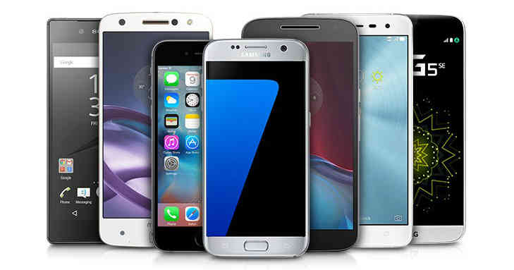

Tecnologia Celular
Inicio
Antes de hacer una evaluación de la competencia en el mercado de la telefonía móvil debemos considerar que este es un negocio en el cual el Estado busca que el consumidor se vea beneficiado, tanto en términos de cobertura como de calidad y precio. Para llevar a cabo este propósito se busca regular el mercado para que se cree competencia y no exista ninguna posición de dominio de parte de uno de los participantes. El resultado de un mercado de telefonía más competitivo se traduce en una importante reducción de las tarifas en un marco de oferta y demanda.
Los consumidores de telefonía móvil adquieren ofertas o paquetes, los cuales están "amarrados" a mayores volúmenes de compras, más servicios y con una tarifa más barata. Incluso, se ofrecen aparatos a precios muy bajos debido a que las empresas utilizan a los equipos como un medio y no como un fin en la venta. Así, vender un smartphone a S/. 1.00 tiene sentido en la medida que este constituye un "gancho" para proveer más servicios como la navegación en internet y las diversas opciones de mensajería o conversación virtual.

Los operadores de telefonía móvil tienen capacidad ociosa y conforme vayan dándole mayor ocupación o capacidad al uso operativo, sus costos deberán reducirse y así podrán seguir neutralizando la bajada de precios, lo que hará que puedan defender su rentabilidad a largo plazo. No obstante, aquí viene el trabajo fino: para que estos negocios sean exitosos necesitan tener mucha eficiencia operativa ya que si carecen de ella pueden salir del mercado.
Ciertamente, con el ingreso de Entel al mercado se ha producido una migración de usuarios que han decidido cambiar de operador por el descontento con el servicio que brindan los otros actores o atraídos por las ofertas de la nueva compañía.